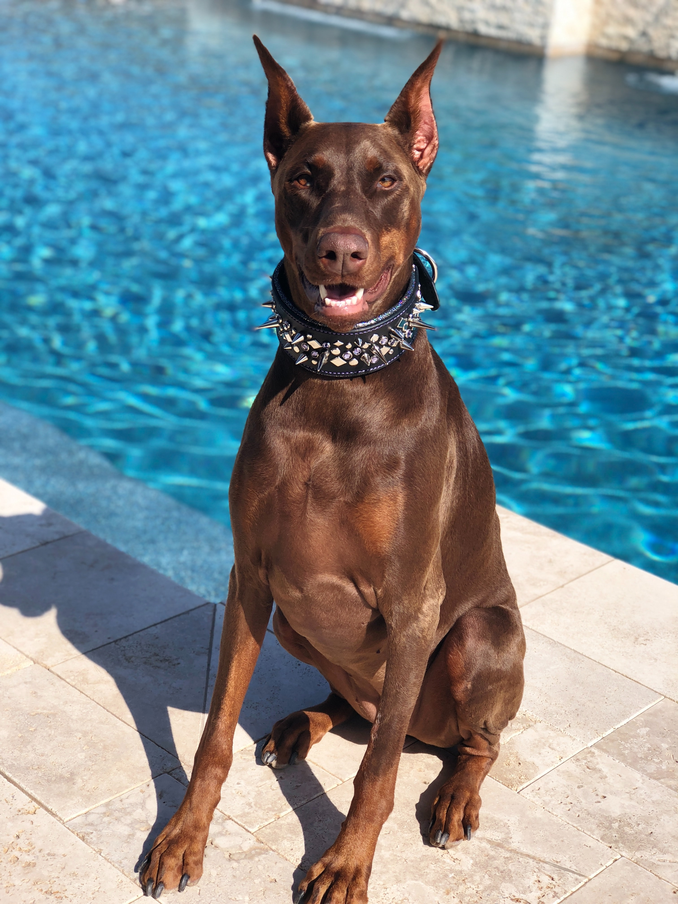

About Doberman Pinschers
I have personally owned three Dobermans in my life. These dogs are one of the most loyal, fearless, and alert dogs I have ever owned. Not only that, but they are also very loving and protective over their owners. Dobermans are fast and very powerful dogs that love lots of attention. These dogs are very athletic and have lots of energy. I own a black and fawn Doberman, one male and one female both are very lovable and also energetic. They are also built very muscular and compact so they are able to move very quickly.
Dobermans are known to be very protective and sort of known as a patrol dog. These dogs can be very well and easily trained. Dobermans are very smart dogs with great senses. Dobermans are believed to be mixed with many other breeds of dogs that are also great at being patrol dogs. Although, these dogs are very protective and loveable they can also be unmanageable if they are not raised properly. However, all of the Dobermans I have owned seem to be very loveable to anyone they come in contact with and any other animal that they are around.
Dobermans are known to be very large in size like it is shown in the picture. Thid is one of the reasons why they are known for being a good patrol dog. They love being outdoors and adventuring to new places. Dobermans are always very alert about their surroundings and are always paying attention to what is going around them. These dogs respond very quickly to anything that they are unsure about when something seems off to them. This makes them very intelligent because some dogs are not always aware of what is going on or they get easily distracted and Dobermans do not unless they are in unsure situations.
Types of Breeds
- American Doberman
- European Doberman
- Warlock Doberman